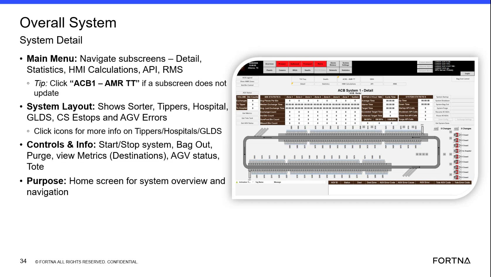
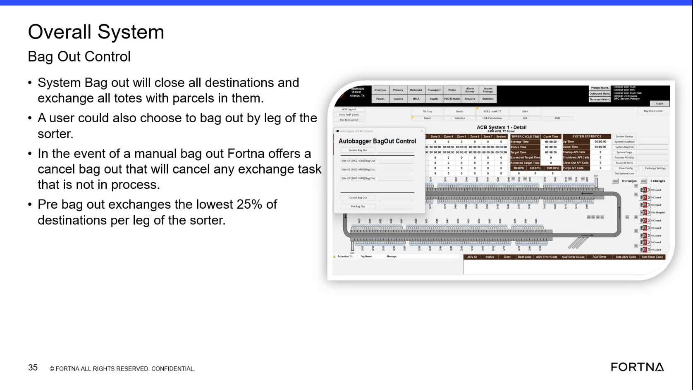

| Procedure ID | proc_run_a_pre_bag_out_exchange_for_the_lowest_25_percent_of_destinations_per_sorter_leg_v1 |
|---|---|
| Title | Run a Pre Bag Out Exchange for the Lowest 25 Percent of Destinations per Sorter Leg |
| Procedure Type | operation |
| Primary Role | operator |
| Support Safe | Yes |
| Validation Status | needs_sme_review |
| Merge Status | source_finalized |
Use the pre bag out function in the bag out control area to exchange the lowest 25 percent of destinations on each sorter leg before a full bag out. The source defines the pre bag out behavior and references bag out control screens, but does not provide the exact interface click sequence.
Use when an operator needs to perform a pre bag out action and the intended behavior is to exchange the lowest 25 percent of destinations on each sorter leg.
Responsible role: operator
Instruction:
Access the bag out control system from the overall system interface and identify the pre bag out function within the bag out control area.
Expected result:
The operator can see the bag out control area and identify the pre bag out option.
Screens / Images:


Stop or Escalate If:
Responsible role: operator
Instruction:
Start the pre bag out action from the bag out control area.
Expected result:
The system begins the pre bag out action.
Screens / Images:
Stop or Escalate If:
Responsible role: operator
Instruction:
Use the documented rule that pre bag out exchanges the lowest 25 percent of destinations on each sorter leg.
Expected result:
The operator understands that pre bag out scope is limited to the lowest 25 percent of destinations per sorter leg.
Screens / Images:
Stop or Escalate If:
Responsible role: operator
Instruction:
Observe exchange activity for destinations included in the lowest 25 percent on each sorter leg.
Expected result:
Exchange activity is observed for destinations that fall within the documented pre bag out scope.
Screens / Images:
Stop or Escalate If:
Responsible role: operator
Instruction:
Record or confirm that the action performed was pre bag out rather than a full system bag out.
Expected result:
The operator confirms the action matched pre bag out behavior and not full system bag out behavior.
Screens / Images:
Stop or Escalate If: